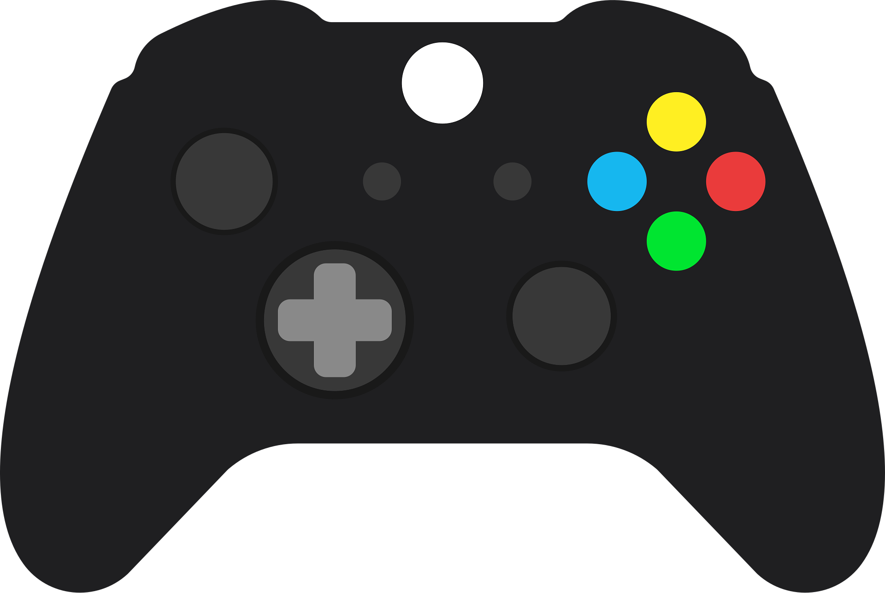

 Video Games: I enjoy competitive and cooperative gaming. My favorite genres include RPGs, shooters, and strategy games. Gaming inspires my interest in game development and user experience design.
🏀 Basketball: I play pickup basketball regularly to stay active and build teamwork skills. I'm also a huge NBA fan and follow the Detroit Pistons closely.
🎥 Anime: I watch anime as a way to relax and explore creative storytelling. Some of my favorites include Attack on Titan, Jujutsu Kaisen, and One Piece.